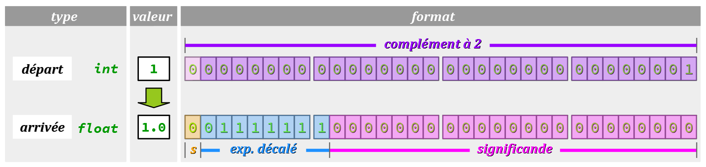

Pour simplifier l'écriture et la lecture des expressions algébriques, comme il est d'usage en mathématiques avec les formules, les langages C et C++ autorisent autant que possible les hétérogénéités de types élémentaires. Par exemple :
- une expression telle que
1 + 2.3est compilable sans avertissement, alors qu'elle code une opération sur deux constantes littérales de types différents (1est entière,2.3est décimale) ; - une affectation telle que
float a = 1;est compilable alors que la valeur initiale (entière) n'est pas du même type que la variable affectée (décimale) ;
1.0 + 2.3 ; float a = 1.0;. Pourtant, il faut savoir que si les formats d'encodage des opérandes d'une opération sont pas identiques, alors son algorithme de calcul dans le processeur n'est pas applicable. En effet, son unité arithmétique et logique – arithmetic and logic unit, ALU W – ne dispose pas des circuits électroniques pour faire des opérations algébriques hétérogènes, comme par exemple additionner un entier et un décimal.
Pour résoudre ce problème, le compilateur prend donc l'initiative d'implémenter dans le code machine la conversion de l'une des valeurs dans le type de l'autre valeur – et ceci conformément à des règles précises. On dit qu'il opère une conversion implicite puisque cette conversion n'est pas explicitement codée dans le programme source.
De plus, les langages C et C++ permettent aussi au codeur d'imposer à une expression un type spécifique, par exemple pour rendre entière la valeur d'une variable décimale, ou réciproquement. On parle alors de conversion explicite, ou encore de transtypage. En anglais, on emploie le terme cast ou encore de type casting W – le verbe « to cast » signifiant en langage technique « mouler » (qu'on peut interpréter au sens de « mouler la valeur » dans le type spécifié).
Parfois indispensables, les opérations de transtypage sont très techniques. Elles exigent à la fois de posséder une bonne maîtrise des types – en particulier de leurs limites d'étendue – mais aussi de connaître certains aspects fondamentaux de l'encodage en mémoire et des techniques de calcul du processeur.
En particulier, on doit savoir si une perte d'information peut intervenir ou non au cours de la conversion, en considérant toutes les combinaisons possibles entre son type « de départ » et son type « d'arrivée ». Or ces combinaisons étant nombreuses, donc on s'efforce de les regrouper en catégories. Essentiellement, on distingue :
- les promotions et les dégradations, lorsque les deux types sont de même format mais de tailles différentes ;
- et les ajustements de type, lorsque les types sont de formats différents.
Pour aborder sereinement ce thème général des conversions de type, qui est difficile, le présent chapitre adopte une pédagogie déductive très classique :
- en commençant par expliquer les aspects fondamentaux des conversions ;
- puis détaillant les différentes conversions implicites que l'on peut imaginer même si, bien entendu, certaines d'entre‑elles sont à éviter (d'où la nécessité d'en connaître l'existence et les conséquences) ;
- et enfin, en indiquant la syntaxe de codage des conversions explicites qui font partie de l'arsenal indispensable du codeur pour coder des expressions dont l'évaluation est fiable.
Aspects fondamentaux des conversions de type
Généralités
Pour faciliter la compréhension, on peut considérer toute conversion de type W comme une opération qui s'applique à une valeur encodée. Au cours de cette opération, on peut distinguer :
- le type de départ, qui est celui de la valeur avant conversion ;
- le type d'arrivée, qui est celui de la valeur après conversion.
Toute opération de conversion procède par un changement d'encodage des bits de la valeur pour qu'elle soit la moins changée possible dans l'interprétation de son type d'arrivée.
Bien évidemment, le résultat d'une conversion dépend très souvent de l'implémentation (cf. chap. C2‑II ).
Au cours de l'évaluation des expressions données supra en exemple introductif , la conversion de la valeur entière 1, implicitement encodée dans le type de départ int, vers le type d'arrivée float, s'effectue ici sans perte d'information (mathématiquement, on a bien 1 = 1,0).
Mais ce n'est pas forcément toujours le cas pour une telle conversion, qu'on appelle un ajustement de type parce que le format d'encodage est différent entre le type de départ et le type d'arrivée. On peut d'ailleurs constater sur la figure ci‑dessous que l'encodage en mémoire est complètement différent entre ces deux types.
Notion de rang de conversion
Tout compilateur des langages C et C++ attribut à chaque type un rang de conversion qui permet d'établir une relation d'ordre total entre les types d'une même famille.
En règle générale, le rang de conversion est d'autant plus grand que le type est « précis ». Cette hiérarchie permet au compilateur de faire les meilleurs choix de conversion dans une expression pour garantir autant que possible sa bonne évaluation.
Contrairement aux rangs de priorité bien établis des opérateurs (cf. chap. C2‑IV ), dans les normes des langages C et C++, il n'existe pas de tableau déterminant le rang de chaque type, du fait que ces derniers peuvent varier selon l'implémentation.
Néanmoins, on peut intuitivement retenir les hiérarchies suivantes par rangs croissants de conversion :
-
char→short→int→long→long longpour les entiers, respectivement dans chaque sous-famillesignedetunsigned; -
float→double→long doublepour les décimaux.
De plus, les normes stipulent quelques règles générales, en particulier que le type bool a le plus petit rang de conversion.
Remarque préliminaire sur les exemples
Pour presque tous les exemples de conversions donnés dans ce chapitre, les résultats sont obtenus par codage dans la fonction main – donc, en utilisant des variables localesn – simplement avec le squelette de code ci‑dessous :
#include <stdio.h>
int main(void)
{
// conversion examples to be coded here
//
//
//
return 0;
}
avec l'environnement de programmation en ligne OnlineGDB, autrement dit sur une machine à architecture 64 bits et la chaîne de compilation GCC (cf. chap. C1‑II ).
Les rares exceptions sont des exemples de codes pour des cartes Arduino. Ils peuvent être testés dans l'environnement Tinkercad en ajoutant les instructions de sorties appropriées sur le moniteur série (Serial.print).
Dans toutes les explications apportées aux problèmes de conversion constatés au fur et à mesure des exemples, on ne fera donc pas de distinction sur le fait que les calculs et autres traitements sont réalisés lors de la compilation ou durant l'exécution du programme.
Par ailleurs, il faut savoir qu'au regard des normes des langages C/C++, certaines conversions ont un résultat considéré comme non défini. Autrement dit, même en sachant comment tel ou tel type est encodé avec une implémentation donnée, il est difficile de prévoir le résultat d'une telle conversion à la seule lecture de la norme en vigueur. A minima, il faudrait expérimenter sur différentes implémentations pour en tirer une conclusion un tant soit peu générale – ce qui n'est pas le cas ici…
Promotion de taille
On parle de promotion de taille lorsque le type d'arrivée d'une conversion est de même format (donc forcément de même famille) et de taille supérieure à celui du type de départ.
Une promotion de taille opère :
- par recopie intégrale des bits encodés dans le type de départ dans les mêmes bits pour le type d'arrivée ;
- et par comblement des bits vacants dans le type d'arrivée avec des
0ou des1(cas des valeurs entières négatives par exemple – cf. chap. C3‑II ) afin d'obtenir une valeur d'interprétation identique dans les types de départ et d'arrivée.
Une promotion n'occasionne aucune perte d'information.
On examine deux cas de promotion du type de départ signed char vers le type d'arrivée plus grand short, qui est implicitement signed. Donc ces deux types utilisent bien le même format dit du complément à 2.
- Promotion avec des valeurs entières positives :
- Promotion avec des valeurs entières négatives :
signed char a = 127; // a = 0b 01111111
short b = a; // b = 0b 00000000 01111111 = 127
printf("%d | %d", a, b); // -> 127 | 127 (OK)
short est rempli de 0.
signed char a = -128; // a = 0b 10000000
short b = a; // b = 0b 11111111 10000000
printf("%d | %d", a, b); // -> -128 | -128 (OK)
short est rempli de 1. Dégradation de taille
Réciproquement, on peut parler de dégradation de taille (en anglais, size decay) lorsque le type d'arrivée d'une conversion est de même format mais de taille inférieure à celui du type de départ.
La conversion consiste alors à essayer d'encoder au mieux dans le type d'arrivée la valeur stockée dans le type de départ avec à la clef souvent une perte d'information potentiellement déterminante.
Cas des entiers
Dans le cas de types entiers, tout dépend de la valeur à convertir par rapport à l'étendue du type d'arrivée :
- si elle déborde de l'étendue, la conversion engendre une perte d'information totale car le débordement est traité tout simplement par troncature des octets de poids fort, ce qui revient à un rebouclage cyclique (cf. chap. C3‑II ). On obtient alors donc une valeur qui n'a rien à voir avec celle de départ ;
- mais si elle ne déborde pas, alors la conversion s'effectue sans perte d'information.
On examine deux cas de dégradation du type de départ short vers le type d'arrivée plus petit signed char.
On rappelle que le type signed char a une étendue allant de -128 (CHAR_MIN) à +127 (CHAR_MAX) – cf. chap. C3‑II .
- Dégradation avec perte d'information totale :
- Dégradation sans perte d'information :
short a = 138; // a = 0b 00000000 10001010
signed char b = a; // b = 0b 10001010 = -118 !
printf("%d | %d", a, b); // -> 138 | -128 (OVERFLOW: 138 > CHAR_MAX)
b par rebouclage cyclique : b = -128 + (138 - 128) = -128 + 10 = -118
short a = 32; // a = 0b 00000000 00100000
signed char b = a; // b = 0b 00100000 = 32
printf("%d | %d", a, b); // -> 32 | 32 (OK: CHAR_MIN ≤ 32 ≤ CHAR_MAX)
Cas des décimaux
Dans le cas de types décimaux, pour qu'il n'y ait aucune perte d'information :
- non seulement il faut que la valeur codée dans le type de départ soit incluse dans l'étendue du type d'arrivée, sinon il se produit un débordement qui est traité par absorption (cf. chap.C3‑II ) ;
- mais il faut aussi que les chiffres significatifs de la valeur codée dans le type de départ n’excèdent pas la capacité d'encodage du significande du type d'arrivée ; sinon, il y a perte de chiffres significatifs par troncature de décimales.
On examine trois cas de dégradation du type de départ double vers le type d'arrivée plus petit float.
On rappelle que le type float a (cf. chap. C3‑V ) :
- une limite d'étendue maximale (
FLT_MAX) d'environ3.4e38; - et une précision de 7 à 9 chiffres significatifs.
- Dégradation avec perte d'information majeure (débordement traité par absorption comme pour tous les types décimaux) :
- Dégradation avec perte d'information mineure (troncature de décimales) :
- Conversion sans perte d'information (cas rare) :
double a = 1e40;
float b = a; // 1e40 > FLT_MAX so b = +inf !!
printf("%g | %g", a, b); // -> 1e+40 | inf (FLOATING POINT OVERFLOW)
double a = 1.2345678910e-10;
float b = a; // b has not 10 significant digits
printf("%.10e | %.10e", a, b); // -> 1.2345678910e-10 | 1.2345678646e-10 (PRECISION PROBLEM)
double a = 0.5; // 0.5 = 2^-1
float b = a; // 0.5 is exactly encoded in float format
printf("%g | %g", a, b); // 0.5 | 0.5 (OK)
Ajustement de types
Un ajustement de type est une conversion entre deux types de formats différents. Une telle conversion met en œuvre une procédure spécifique de transposition des bits du format de départ dans le format d'arrivée – d'où le terme d'« ajustement » – avec potentiellement une perte d'information, mais pas systématiquement.
On distingue trois catégories de cas, en fonction des types de départ et d'arrivée :
- Lorsque l'un des types est booléen ;
- Lorsque l'un des types est entier et l'autre décimal ;
- Lorsque les deux types sont entiers, l'un signé, l'autre non‑signé.
A) Conversions lorsque l'un des types est booléen
- Si c'est le type de départ qui est booléen alors, quel que soit le type d'arrivée (entier ou décimal), la conversion s'effectue sans perte d'information, car il n'y a que les deux valeurs
0et1à coder, ce qui est possible dans n'importe quel type numérique. - Si c'est le type d'arrivée qui est booléen, alors la conversion opère une perte d'information majeure (à l'exception des valeurs
0et1, bien entendu).
On examine brièvement ces deux cas qui ne présentent pas de difficultés de compréhension.
- Ajustement sans perte d'information :
- Ajustement avec perte d'information majeure :
bool a = true; // a = 1
int b = a; // b = 1
printf("%d | %d", a, b); // -> 1 | 1 (OK)
int a = 123;
bool b = a; // b = 1
printf("%d | %d", a, b); // -> 123 | 1 (logical value only)
Dans le second cas, la perte d'information n'est néanmoins pas totale conformément au principe de base des langages C/C++ selon lequel toute valeur peut être considérée comme booléenne – en étant interprétée comme faux si elle satisfait le critère d'égalité à zéro, sinon comme vrai (cf. chap. C2‑IV ).
Une telle conversion caractérise donc l'aspect logique d'une expression. Si c'est là l'intention du codeur, cela ne pose aucun problème.
B) Conversions entre un type entier et un type décimal
Si c'est le type de départ qui est entier alors, comme le format décimal du type d'arrivée ne permet d'encoder les chiffres d'une valeur entière qu'avec le nombre limité de décimales de son significande, la conversion s'effectue avec une possible perte mineure d'information. (Mais attention, même une perte mineure d'information peut causer un dysfonctionnement majeur.)
On examine deux cas d'ajustement de type avec le type de départ int vers le type d'arrivée float. On rappelle que le type float a une précision de 7 à 9 chiffres significatifs seulement (cf. chap. C3‑V ).
- Ajustement sans perte d'information :
- Ajustement avec perte d'information mineure (troncature) :
int a = 12345; // a has only 5 digits
float b = a; // b = 1.2345000e4 = 12345 (OK)
printf("%d | %g", a, b); // -> 12345 | 12345 (OK)
int a = 2123456789; // a has 10 digits
float b = a; // b = 2.123456768e9 (the two last digits are wrong)
printf("%d | %10.0f", a, b); // -> 2123456789 | 2123456768 (PRECISION PROBLEM)
Si le type de départ est décimal, la conversion s'effectue avec une possible perte d'information mineure ou majeure – voire totale – car le format entier du type d'arrivée ne permet d'encoder en valeurs absolues ni les parties décimales (donc aucun des nombres plus petits que 1), ni les nombres plus grands que son maximum (environ 109 avec le type int et 1018 avec le type long ou long long – cf. chap. C2‑II).
En cas de débordement, la conversion n'opère pas par cyclicité car le nombre à convertir n'a pas toujours d'« image » entière précise (il peut déborder de l'intervalle du plus grand type entier gérable par la machine). Par convention, la valeur attribuée est souvent la borne inférieure de l'étendue du type d'arrivée. Ce choix a pour but d'attirer l'attention pour identifier a posteriori l'existence d'un problème.
On examine trois cas d'ajustement du type de départ float vers le type d'arrivée int. On rappelle que :
- le type
floata seulement une précision de 7 à 9 chiffres significatifs (cf. chap. C3‑V ) ; - le type
inta usuellement une étendue allant de-2147483648(INT_MIN) à+2147483647(INT_MAX) – cf. chap. C3‑II .
- Ajustement sans perte d'information :
- Ajustement avec perte d'information mineure (troncature des décimales) :
- Ajustement avec perte d'information totale (débordement aboutissant à une valeur conventionnelle) :
float a = 1.234567e6;
int b = a; // 1234567 < INT_MAX so b = 1234567
printf("%7.0f | %d", a, b); // -> 1234567 | 1234567 (OK)
float a = 1.234567e2; // a = 123,4567 (non integer value)
int b = a; // b = 123 (decimals truncated)
printf("%g | %d", a, b); // -> 123,4567 | 123 (PRECISION PROBLEM)
float a = 1.234567e10; // a = 12 345 670 000
int b = a; // a > 2 147 483 647 (INT_MAX) => OVERFLOW!
printf("%11f | %d", a, b); // -> 12345670000 | -2147483648 (= INT_MIN)
En règle générale, on retiendra donc que pour obtenir la partie entière d'une valeur décimale, et a fortiori pour arrondir cette dernière, il est vivement conseillé de ne pas procéder par conversion.
La bonne pratique consiste à employer l'une des trois fonctions d'arrondi round, floor ou ceil conçues à cet effet et déclarées dans le fichier math.h (cf. chap. C2‑IV ).
C) Ajustements entre un type entier signé et un type entier non signé
On rappelle que les formats d'encodage des types non signés – le binaire naturel – et signés – le complément à 2 – sont différents, mais présentent toujours une plage de valeurs positives compatibles (cf. chap. C3‑II, §3.2, remarque B ).
Tant que la valeur à convertir est dans cette plage – l'intersection des ensembles de valeurs encodables dans le type de départ et d'arrivée – la conversion n'occasionne aucune perte d'information. Dans le cas contraire, la perte d'information est totale.
Dans tous les cas, le compilateur recopie sans changement de format les octets de poids faibles du type de départ dans le type d'arrivée puis :
- si le type d'arrivée est plus petit que le type de départ, le compilateur tronque les octets de poids forts qui débordent, comme dans le cas d'une dégradation ;
- si le type d'arrivée est plus grand que le type de départ, le compialteur remplit les octets de poids forts avec des
0ou des1sselon que la valeur à convertir est respectivement positive ou négative, comme dans le cas d'une promotion (mais le résultat n'est pas forcément satisfaisant).
Il en résulte qu'en cas de débordement, la valeur d'arrivée découle de la valeur de départ conformément aux lois de l'arithmétique cyclique.
On examine d'abord deux cas d'ajustement du type de départ unsigned char vers le type d'arrivée signed char, donc de même taille mais de formats différents.
On rappelle que le type signed char a une étendue allant de -128 (CHAR_MIN) à +127 (CHAR_MAX) – cf. chap. C3‑II .
- Ajustement avec perte d'information totale :
- Ajustement sans perte d'information :
unsigned char a = 138; // a = 0b 10001010 (no sign bit)
signed char b = a; // b = 0b 10001010 = -118 (sign bit = 1)
printf("%u | %d", a, b); // -> 138 | -118 (OVERFLOW: 138 > CHAR_MAX)
unsigned char a = 100; // a = 0b 01100100
signed char b = a; // b = 0b 01100100 = 100
printf("%u | %d", a, b); // -> 100 | 100 (OK: CHAR_MIN ≤ 100 ≤ CHAR_MAX)
On examine maintenant deux cas d'ajustement avec perte d'information totale entre des types tailles et formats différents, typiquement pour convertir une valeur négative dans un type non signé.
- Le type d'arrivée est plus grand que le type de départ, les octets de poids forts surnuméraires sont remplis avec des
1(bit de signe de la valeur de départ) : - Le type d'arrivée est plus petit que le type de départ, les octets de poids forts surnuméraires sont tronqués :
signed char a = -118; // a = 0b 10001010
unsigned short b = a; // b = 0b 11111111 10001010 = 65418
printf("%d | %u", a, b); // -> -118 | 65418 (OVERFLOW: -118 ≤ USHORT_MIN)
signed short a = -260; // a = 0b 11111110 11111100
unsigned char b = a; // b = 0b 11111100
printf("%d | %u", a, b); // -> -260 | 252 (OVERFLOW: -118 ≤ USHORT_MIN)
Il apparaît donc clairement que pour extraire la valeur absolue d'une valeur signée, il ne faut surtout pas recourir à une conversion.
La bonne pratique consiste bien évidemment d'employer la fonction abs (cf. chap. C2‑IV ), qui est précisément conçue pour cet usage.
Conversions implicites
Les langages C et C++ permettent de coder des opérations où interviennent des données de types hétérogènes, alors qu'il n'existe pas d'algorithmes de calcul direct pour évaluer le résultat de telles opérations. Cette possibilité rend les expressions calculatoires faciles à saisir et lire dans le code source, comme s'il s'agissait de formules mathématiques. Cependant, elle suppose que le compilateur procède lui-même à des conversions implicites.
Pour un codeur, il est indispensable de connaître ces conversions implicites. En effet, le compilateur procède « au mieux » dans le but d'optimiser la précision des résultats numériques, mais il ne peut pas faire des miracles (éviter les pertes d'informations), ni deviner les intentions du codeur. C'est donc seulement en commaissant l'existence des conversions implicites et en sachant leurs limites que le codeur peut, si nécessaire, « reprendre la main » et imposer des conversions explicites pour obtenir un résultat attendu.
Conversions d'affectation
Dans toute expression d'affectation de la forme l‑value = r-value (cf. chap C2‑IV ), le compilateur évalue l'expression r-value puis opère la conversion implicite de sa valeur dans le type d'arrivée déclaré de la l‑value.
Une telle conversion peut être aussi bien une promotion qu'une dégradation ou encore un ajustement.
Le codeur doit avoir conscience que, même si une telle conversion occasionne un débordement, le compilateur produit quand même un code exécutable et n'émet que rarement un avertissement (par défaut, seulement dans certains cas d'initialisation d'une variable entière par une valeur numérique débordant de l'étendue du type).
Tous les exemples qui ont été proposés dans la section 1 sont des conversions d'affectation.
Promotions systématiques dans les types de calcul par défaut
Dans une expression, le compilateur opère pour chaque atome, une conversion implicite de promotion de taille systématique au type de calcul par défaut de sa famille, si l'atome est encodé dans un type de rang inférieur, à savoir :
- le type
intpour toutes les valeurs de types entiers signés de rang inférieur :
signed char,short… - dans le type
unsigned intpour toutes les valeurs de types entiers non signés de rang inférieur :
unsigned char,unsigned short… - dans le type
doublepour toutes les valeurs de typesfloat.
Cette stratégie permet déjà d'éviter de nombreux débordements dans les valeurs intermédiaires de l'évaluation d'une expression.
Dans le code ci‑dessous :
signed char a = 10, b = 30 ;
signed char c = (a * b) / 5; // a * b = 300 > CHAR_MAX (127)
printf("%d", c); // 60 (OK)
le compilateur évalue l'expression (a * b) / 5 en effectuant implicitement la promotion systématique de tous les atomes dans le type int.
Cette initiative est tout à fait opportune car si les valeur de a et b étaient évaluées dans le type unsigned char, la valeur du produit a * b déborderait.
Applications
On rappelle que sur une carte Arduino à cœur AVR 8 bits (cartes Uno, Nano, Mega, etc. – cf. chap. C1‑III ), le type int – employé par défaut par le compilateur pour évaluer les expressions à valeurs entières – n'est encodé que sur 2 octets (cf. chap. C3‑II ). Son étendue est donc limitée à l'intervalle allant de -32768 à +32737.
En l'absence de précaution, un débordement est vite arrivé, comme nous allons le voir…
Pour coder le programme Arduino demandé à l'exercice n° 2 du sujet de TP C2‑1 – une led clignotant avec une période de 1 s, et un rapport cyclique de 25 % – on peut traduire directement ces spécifications par la déclaration de deux constantes entières period et dutyCyclePercent, comme dans le code ci‑dessous :
const int period = 1000; // = 1s const int dutyCyclePercent = 25;
Les valeurs de ces constantes ne posent a priori aucun problème puisqu'elle sont largement comprises dans l'étendue du type int.
Ensuite, pour pouvoir coder le signal de clignotement à l'aide de la fonction delay, il faut calculer les valeurs de son temps haut et de son temps bas, ce que l'on peut tenter en déclarant les respectivement deux constantes highDuration et lowDuration, comme dans le code ci‑dessous :
const int highDuration = (period * dutyCyclePercent) / 100; const int lowDuration = (period * (100 - dutyCyclePercent)) / 100; // BAD TYPES CHOICE ON AVR board: lowDuration = 94 (OVERFLOW! It should be 750)
Mais comme indiqué en commentaire à la ligne nº 9, si le programme est compilé pour une carte à cœur AVR 8 bits, ce code occasionne un débordement lors du calcul de la constante lowDuration : en effet, 1000 × (100 − 25) = 75000, valeur qui est supérieure à la limite 32 767 !
On pourrait croire naïvement qu'il suffirait de déclarer les constantes lowDuration dans le type unsigned long (dont la limite supérieure d'étendue est +2147483647) – lequel est justement celui qu'attend la fonction delay pour son argument. Et pourtant, cette « solution » conduit à un échec car c'est lors de l'évaluation de la sous‑expression :
period * (100 - dutyCyclePercent)
que le débordement se produit, et non pas lors de l'affectation de la constante lowDuration.
En revanche, il existe une (première) solution simple, même si elle n'est pas très intuitive : il suffit par exemple de déclarer au moins l'une des deux constantes period et dutyCyclePercent de type long ou unsigned long. Alors, pour évaluer la sous‑expression ci‑dessus, le compilateur procèdera à une promotion de taille de tous les atomes dans ce type – dont l'étendue est beaucoup plus grande que celle de int – et il n'y a plus aucun débordement.
- Il aurait été possible d'implémenter le rapport cyclique dans une constante décimale de type
floatcomme dans le code ci‑dessous. - On verra infra que si l'on maintient le choix initial de coder le rapport cyclique comme un pourcentage entier, on peut résoudre le problème de débordement évoqué en imposant une conversion explicite dans la sous‑expression qui déborde – solution qui évite de changer le type des constantes et qui fait gagner (un peu) de place en mémoire.
const int period = 1000; // = 1s const float dutyCycle = 0.25; const int highDuration = round(period * dutyCycle); const int lowDuration = round(period * (1.0 - dutyCycle));
highDuration et lowDuration, dont les expressions d'initialisation seraient évaluées dans le type double par promotion. En revanche, il faudrait employer une fonction d'arrondi pour passer proprement du type double au type int d'affectation.Promotions au type de plus grande taille
Dans toute opération dont les opérandes sont de même famille de type mais de tailles différentes, le compilateur procède à la conversion implicite de la valeur de l'opérande du type le plus petit dans le type le plus grand.
Dans le code ci‑dessous :
long double a = 1e400L; // postfix L requiered for long double litterals
double b = a / 1e100; // DBL_MAX ≃ 1.7e308
printf("%lg", b); // b = 1e300 as expected
Avant l'affectation de la variable b, l'expression a / 1e100 n'est pas évaluée dans le type double par défaut. D'abord, le compilateur convertit implicitement la constante 1e100 dans le type plus grand long double imposé par la variable a. Ensuite, il évalue la division dans ce type.
Cette promotion préalable au calcul est indispensable, car même si le résultat doit ensuite être reconverti dans le type double, l'opération n'aurait pas pu être effectuée dans ce type, puisque la valeur 1e400 en déborde.
Ajustements à la famille de type la plus précise
Si, dans une expression, une opération est codée avec opérandes de familles de types différentes, le compilateur procède à la conversion implicite de valeur de l'opérande dont la famille de types est la moins précise vers la famille de types la plus précise conformément à l'ordre croissant de précision ci‑dessous :
Dans le code ci‑dessous :
int a = 1 + 2 + 3.5 + 4.6; // a = 11 (truncation of 11.1)
printf("%d", a);
avant l'affectation de la variable a, la sous‑expression 1 + 2 + 3.5 + 4.6 est évaluée :
- d'abord par l'exécution de l'addition
1 + 2dans le typeintpar défaut, ce qui donne3; - puis, pour effectuer
3 + 3.5, préalableblement par la conversion implicite de3dans le typedouble; cela donne6.5; - puis, par l'éxécution de l'addition
6.5 + 4.6dans le typedouble, ce qui donne11.1.
Même si le type d'arrivée final de l'affectation est int, il aurait été moins précis de compiler le calcul dans ce type, car les valeurs 3.5 et 4.6 auraient alors été respectivement converties en 3 et 4 pour aboutir à une somme valant seulement 7. En définitive, la somme aurait pris la valeur 10, non satisfaisante !
Ajustements de formats signés/non signés
Le cas le plus compliqué est celui d'une opération arithmétique dont les opérandes sont tous les deux entiers mais de format hétérogène – l'un signé, l'autre non signé. Il nécessite de distinguer plusieurs sous-cas pour déterminer lequel des deux types sera choisi comme type d'arrivée pour évaluer l'opération.
- si le type non signé a un rang supérieur ou égal de conversion à celui du type signé, alors la valeur de l'opérande de ce type est implicitement convertie dans le type non signé ;
- sinon :
- si le type signé peut encoder toutes les valeurs du type non signé, alors la valeur de l'opérande de type dernière est implicitement convertie dans le type signé ;
- sinon, les valeurs des deux opérandes sont implicitement converties dans le type non signé de même taille que le type signé.
Dans tous les cas, la conversion implicite consiste à recopier tel quel, et autant que possible, dans le type d'arrivée le mot binaire de la valeur du type de départ.
On considère deux exemples académiques pour illustrer les principaux cas détaillés ci‑dessus.
- Le type non signé est de rang supérieur ou égal – ici, égal – à celui du type signé.
- la valeur de l'opérande
aest trop grande pour être encodable dans le typeint; - la valeur de l'opérande
bétant négative, elle n'est pas encodable dans le typeunsigned int. - Le type non signé est de rang inférieur à celui du type signé, mais ce dernier peut encoder toutes les valeurs du type non signé.
unsigned int a = 4000000000; // NB: a > INT_MAX (2147483647)
int b = -1; // NB: b < UINT_MIN (0)
printf("%u", a + b); // 3999999999 as expected (OK)
a + b on pourrait a priori penser qu'il n'y a aucune conversion implicite satisfaisante puisque : -1 de b est implicitement convertie dans le type d'arrivée unsigned int par recopie de son mot binaire tel quel : 11111111 11111111 11111111 11111111
qui vaut alors
4294967295. Ensuite, l'opération a + b est effectuée dans le type d'arrivée unsigned int : 4 000 000 000 + 4 294 967 295 = 8 294 967 295
et son résultat provoque un débordement qui, par rebouclage cyclique, aboutit à la valeur attendue
3999999999.
unsigned int a = 2000000000; // NB: a < INT_MAX (2147483647)
long b = -8000000000;
printf("%ld", a + b); // -6000000000 as expected (OK)
a + b la valeur de l'opérande a est implicitement convertie dans le type long (ou long long) par recopie directe de son mot binaire, sans aucune perte d'information puisque ce type peut encoder toutes les valeurs du type unsigned int. Conversions explicites
Les langages C et C++ fournissent au codeur la possibilité d'imposer à la valeur d'une expression une conversion explicite dans un type d'arrivée spécifié, qui doit impérativement être scalaire (cf. chap. C3‑I ). On parle de transtypage ou encore de coercition, voire de cast ou type casting par anglicisme.
Techniquement, cette possibilité est offert sous la forme d'un opérateur dont la syntaxe est un peu différente selon le langage C ou C++ employé.
En langage C
En langage C, l'opérateur de transtypage (cast operator) obéit à la syntaxe opérationnelle suivante :
(descripteur de type)
opérande
Dans cette syntaxe :
- le descripteur de type spécifie le type d'arrivée de la conversion et doit obligatoirement être encapsulé dans des parenthèses
(); - l'opérande est la première expression qui suit la parenthèse fermante
); si l'on souhaite convertir la valeur d'une expression composée, il est indispensable de l'encapsuler dans des parenthèses, comme ci‑dessous :
(descripteur de type) (opérande)
En effet, l'opérateur de transtypage dispose du rang de priorité n° 2 (cf. chap. C2‑III ).
Pour plus de détails sur l'opérateur de conversion, on peut consulter cette page de référence C.
On rappelle que le type par défaut d'évaluation d'une expression entière est int dont l'étendue usuelle sur un PC va de -2147483648 (INT_MIN) à +2147483647 (INT_MAX) – cf. chap. C3‑II ). Même si cette étendue peut sembler large, un débordement est vite arrivé, comme dans le calcul de la variable y ci‑dessous :
int a = 100000;
long b = a * a; // b = 1 410 065 408 (ERROR BY OVERFLOW)
long c = (long) a * a; // c = 10 000 000 000 (expected result)
printf("%ld %ld", b, c); // 1410065408 | 10000000000 (see the difference!)
En effet, même si la variable b est déclarée de type long long, l'expression a * a est évaluée dans le type int avant l'affectation et la valeur 10000 * 10000 déborde de son étendue. Un transtypage vers le type long (ou long long) de l'un des atomes de l'expression est donc indispensable.
Pour régler le problème ci‑dessus, coder :
long c = (long)(a * a);
en encapsulant toute l'expression a * a dans des parenthèses n'est pas satisfaisant, car cette expression reste évaluée dans le type int avant le transtypage.
En langage C++
En langage C++, les possibilités de codage d'un transtypage sont plus nombreuses :
- la syntaxe opérationnelle du langage C reste valable (cf. supra), mais avec le rang de priorité n° 3 ;
- il existe aussi la syntaxe fonctionnelle suivante :
identificateur de type (expression)
qui possède le rang de priorité n° 2.
Attention, dans la syntaxe dite fonctionnelle (appelée ainsi parce quelle suit les mêmes règles que celle d'un appel de fonction) :
- les parenthèses
()encapsulant l'expression dont la valeur est à convertir sont obligatoires ; - l'identificateur de type ne peut être être composé que d'un et un seul identificateur (soit un mot‑clef, soit une identificateur déclaré par
typedef, synonyme d'un type scalaire).
unsigned char (a) n'est pas compilable (ni en C++, ni a fortiori en C). Il faut employer à la place la syntaxe opérationnelle (unsigned char) (a). Il existe également d'autres syntaxes de transtypage faisant appel à des notions plus complexes (variables statiques, etc.) qui seront abordées ultérieurement (partie C4 du module). Pour plus de détails, on peut se reporter à cette page de référence C++.
Applications
Reprenons la problématique de l'exercice n° 2 du sujet de TP C2‑1 exposée supra (clignotement d'une led). Pour prévenir tout débordement lors de l'évaluation des constantes highDuration et lowDuration, il suffit de coder une conversion explicite dans le type long de l'un des atomes de l'expression qui code chacune de ces valeurs, par exemple l'atome period, comme ci‑dessous :
const int highDuration = ((long) period * dutyCyclePercent) / 100; const int lowDuration = ((long) period * (100 - dutyCyclePercent)) / 100;
L'avantage de cette solution par rapport à celles proposées auparavant est qu'elle ne requiert pas plus d'espace mémoire pour les constantes, mais seulement un peu plus de temps de calcul lors de la compilation, ce qui est de toute façon inévitable.